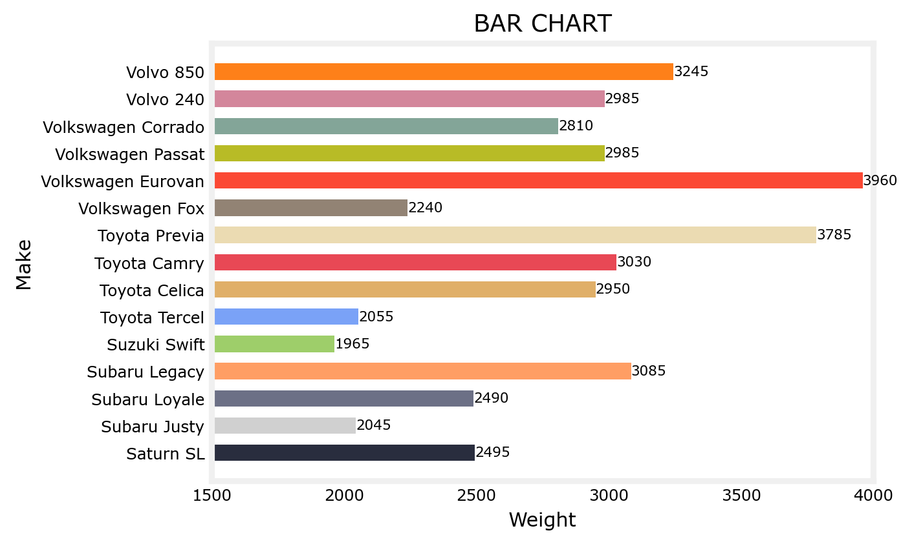
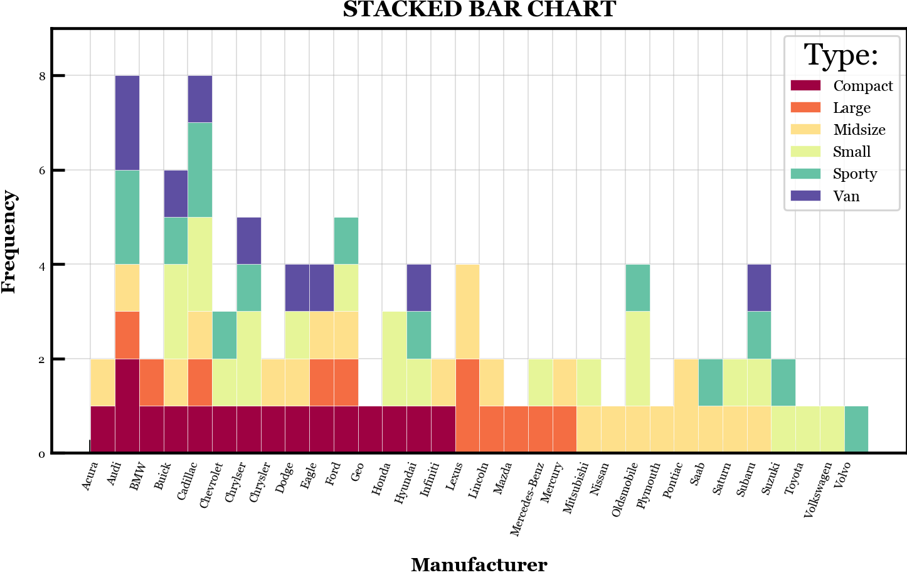
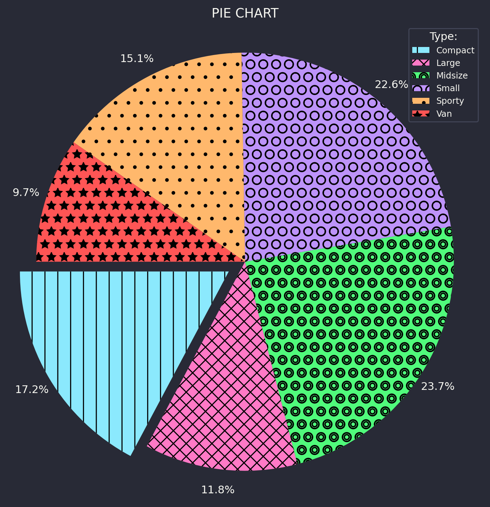
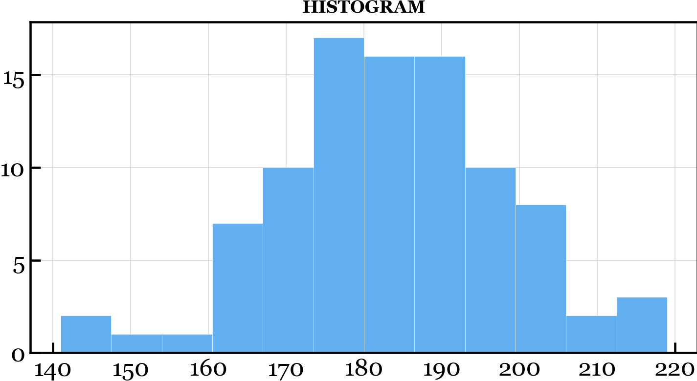
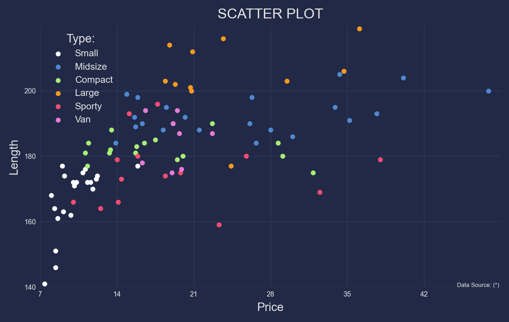
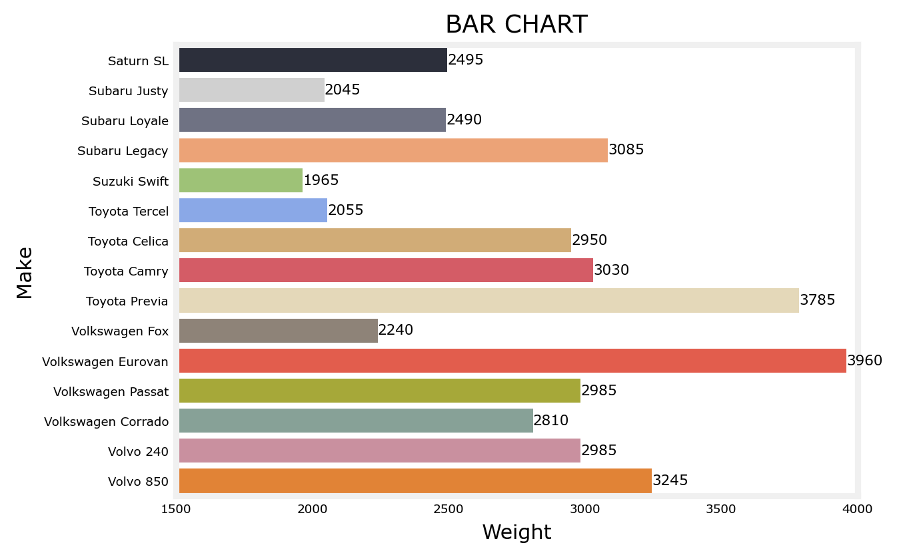
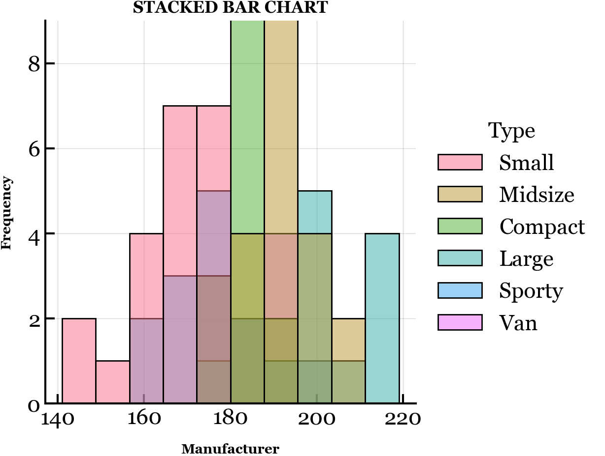
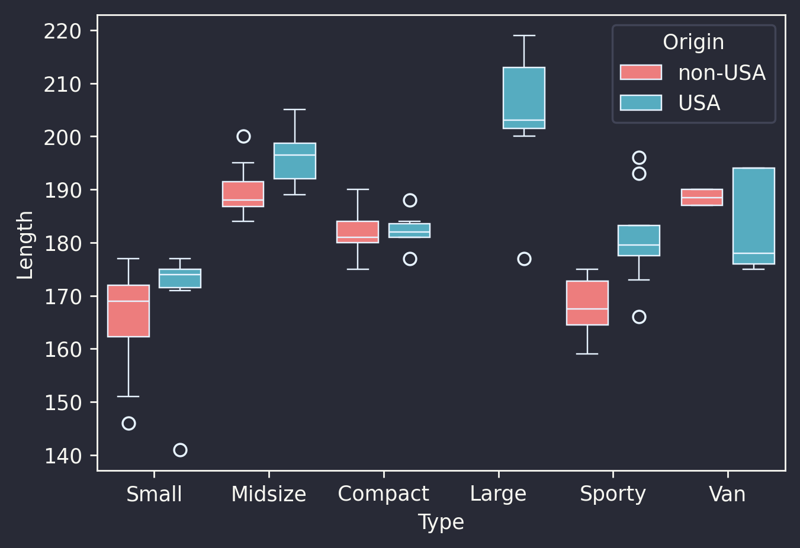
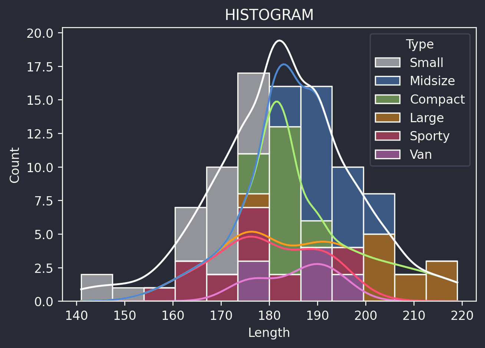
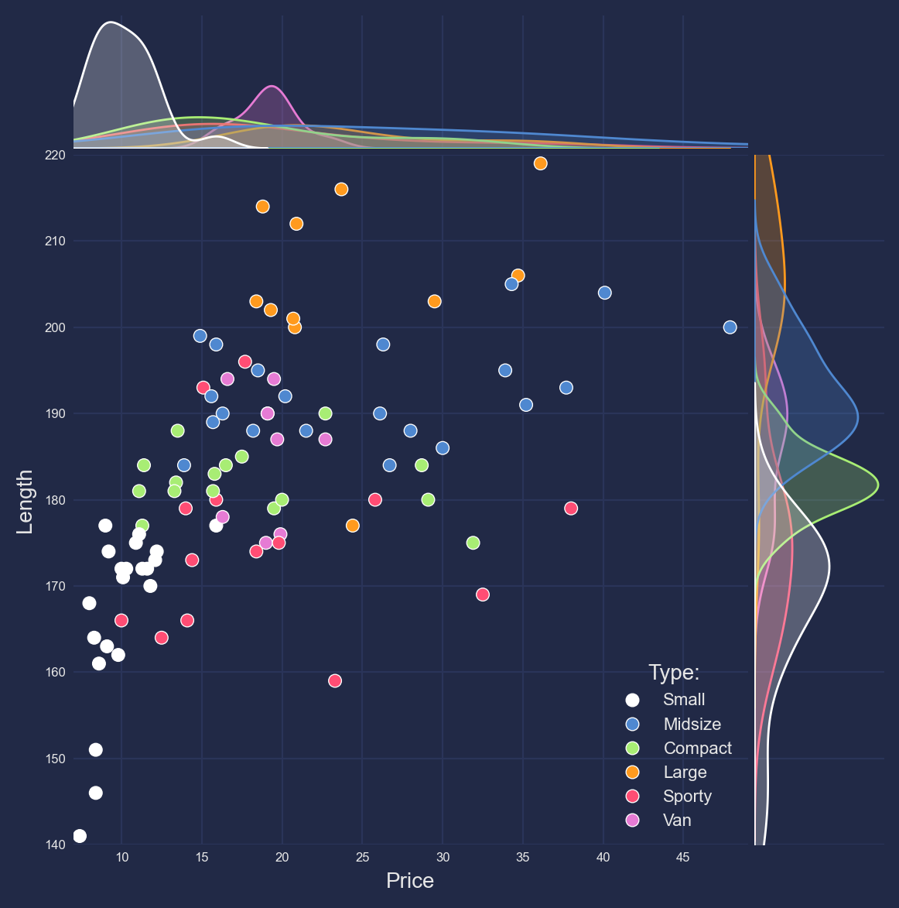

![]()
Code
import seaborn as sns
import pandas as pd
import numpy as np
import plotly.express as px
import altair as alt
import matplotlib.pyplot as pltMonday, July 1, 2024
MatplotlibMatplotlib es una librería de visualización que permite generar gráficos y diagramas en Python. Proporciona una amplia gama de opciones para crear gráficos estáticos, animados e interactivos. Es muy versátil y se puede utilizar para representar datos en 2D y, con algunas limitaciones, en 3D.
Curva de aprendizaje: Aunque es poderosa, puede ser compleja para los principiantes debido a la gran cantidad de opciones y configuraciones disponibles.
Rendimiento: Para gráficos muy grandes o complejos, puede no ser tan eficiente como algunas alternativas.
Estética predeterminada: Los gráficos generados por defecto pueden no ser estéticamente atractivos, requiriendo ajustes adicionales para mejorar su presentación.
| Manufacturer | Model | Type | Min.Price | Price | Max.Price | MPG.city | MPG.highway | AirBags | DriveTrain | ... | Passengers | Length | Wheelbase | Width | Turn.circle | Rear.seat.room | Luggage.room | Weight | Origin | Make | |
|---|---|---|---|---|---|---|---|---|---|---|---|---|---|---|---|---|---|---|---|---|---|
| 0 | Acura | Integra | Small | 12.9 | 15.9 | 18.8 | 25 | 31 | NaN | Front | ... | 5 | 177 | 102 | 68 | 37 | 26.5 | 11.0 | 2705 | non-USA | Acura Integra |
| 1 | Acura | Legend | Midsize | 29.2 | 33.9 | 38.7 | 18 | 25 | Driver & Passenger | Front | ... | 5 | 195 | 115 | 71 | 38 | 30.0 | 15.0 | 3560 | non-USA | Acura Legend |
| 2 | Audi | 90 | Compact | 25.9 | 29.1 | 32.3 | 20 | 26 | Driver only | Front | ... | 5 | 180 | 102 | 67 | 37 | 28.0 | 14.0 | 3375 | non-USA | Audi 90 |
| 3 | Audi | 100 | Midsize | 30.8 | 37.7 | 44.6 | 19 | 26 | Driver & Passenger | Front | ... | 6 | 193 | 106 | 70 | 37 | 31.0 | 17.0 | 3405 | non-USA | Audi 100 |
| 4 | BMW | 535i | Midsize | 23.7 | 30.0 | 36.2 | 22 | 30 | Driver only | Rear | ... | 4 | 186 | 109 | 69 | 39 | 27.0 | 13.0 | 3640 | non-USA | BMW 535i |
5 rows × 27 columns
# ==============================================================================
# ------------------------------------ BAR -------------------------------------
# ==============================================================================
cols = [
'#292D3E', '#D0D0D0', '#6C7086', '#FF9E64', '#9ECE6A', '#7AA2F7', '#E0AF68', '#E84855',
'#EBDBB2', '#928374', '#FB4934', '#B8BB26', '#83A598', '#D3869B', '#FE8019'
]
THEME = 'https://raw.githubusercontent.com/meltred/matplotlib-themes/main/minimalistic/deeplearning.mplstyle'
plt.style.use('default'); plt.style.use(THEME)
plt.figure(figsize = (6, 4), dpi = 110) # (16, 10)
plt.barh(
y = df['Make'].tail(15), width = df['Weight'].tail(15), color = cols, height = 0.6
)
for i, val in enumerate(df['Weight'].tail(15).values):
plt.text(
x = val, y = i, s = round(val), fontdict = {'size':7},
horizontalalignment = 'left', verticalalignment = 'center'
)
plt.title('BAR CHART', fontsize = 12)
plt.xlabel('Weight', fontsize = 10); plt.ylabel('Make', fontsize = 10)
plt.xlim(1500, 4000)
plt.show()
# ==============================================================================
# ----------------------------------- STACKED ----------------------------------
# ==============================================================================
x_var = 'Manufacturer'
group = 'Type'
df_agg = df.loc[:, [x_var, group]].groupby(group)
vals = [df[x_var].values.tolist() for i, df in df_agg]
THEME = 'https://raw.githubusercontent.com/andrematte/matte-matplotlib/main/Matte.mplstyle'
plt.style.use('default'); plt.style.use(THEME)
plt.figure(figsize = (8, 4), dpi = 110)
cols = [plt.cm.Spectral(i/float(len(vals)-1)) for i in range(len(vals))]
n, bins, patches = plt.hist(
vals, df[x_var].unique().__len__(), color = cols[:len(vals)],
stacked = True, linewidth = 0.2, edgecolor = 'white'
)
plt.title('STACKED BAR CHART', fontsize = 12)
plt.xlabel('Manufacturer', fontsize = 10); plt.ylabel('Frequency', fontsize = 10)
plt.ylim(0, 9)
plt.xticks(
ticks = bins[:-1], labels = np.unique(df[x_var]).tolist(),
rotation = 70, horizontalalignment = 'center', fontsize = 6)
plt.yticks(fontsize = 6)
plt.legend(
{group:col for group, col in zip(np.unique(df[group]).tolist(), cols[:len(vals)])},
title = 'Type:', fontsize = 8
)
# ==============================================================================
# ------------------------------------ PIE -------------------------------------
# ==============================================================================
df_trans = df.groupby('Type').size()
THEME = 'https://raw.githubusercontent.com/dracula/matplotlib/master/dracula.mplstyle'
plt.style.use('default'); plt.style.use(THEME)
plt.figure(figsize = (8, 8), dpi = 110)
plt.pie(
x = df_trans.values, labels = df_trans.index.values,
explode = [0.1, 0, 0, 0, 0, 0], autopct = '%1.1f%%',
startangle = 180, hatch = ['|', 'xx', 'oO', 'O', '.', '*'],
radius = 1.1, pctdistance = 1.1, labeldistance = None
)
plt.title('PIE CHART', fontsize = 12)
plt.legend(title = 'Type:', fontsize = 8)
plt.show()
# ==============================================================================
# ----------------------------------- HIST -------------------------------------
# ==============================================================================
THEME = 'https://raw.githubusercontent.com/andrematte/matte-matplotlib/main/Matte.mplstyle'
plt.style.use('default'); plt.style.use(THEME)
plt.figure(figsize = (8, 4), dpi= 110)
plt.hist(x = df['Length'], bins = 12, color = '#61AFEF', linewidth = 0.2, edgecolor = 'white')
plt.title('HISTOGRAM', fontsize = 12)
plt.show()
# ==============================================================================
# ---------------------------------- SCATTER ----------------------------------
# ==============================================================================
cats = df['Type'].unique()
cols = ['#FFFFFF', '#4F88D0', '#A8ED74', '#FF9A1E', '#FF4D74', '#E67BD4']
THEME = 'https://github.com/dhaitz/matplotlib-stylesheets/raw/master/pitayasmoothie-dark.mplstyle'
plt.style.use('default'); plt.style.use(THEME)
plt.figure(figsize = (7, 4), dpi = 120)
for i, cat in enumerate(cats):
plt.scatter(
x = 'Price', y = 'Length',
s = 10, c = cols[i], label = str(cat),
data = df.loc[df['Type'] == cat,:]
)
plt.gca().set(
xlim = (7, 49), ylim = (140, 220),
xlabel = 'Price', ylabel = 'Length',
xticks = np.arange(7, 49, step = 7), yticks = np.arange(140, 220, step = 20)
)
plt.title('SCATTER PLOT', fontsize = 12)
plt.xticks(fontsize = 6); plt.yticks(fontsize = 6)
plt.legend(title = 'Type:', fontsize = 8)
plt.text(45, 140, "Data Source: (*)", fontsize = 5)
plt.show()
SeabornSeaborn es una librería de visualización de datos en Python que proporciona una interfaz más sencilla y elegante sobre Matplotlib. Está diseñada para hacer que la creación de gráficos estadísticos sea más fácil y estéticamente agradable. Seaborn se basa en Matplotlib, pero ofrece funcionalidades adicionales y una integración más fluida con pandas.
# ==============================================================================
# ------------------------------------ BAR -------------------------------------
# ==============================================================================
cols = [
'#292D3E', '#D0D0D0', '#6C7086', '#FF9E64', '#9ECE6A', '#7AA2F7', '#E0AF68', '#E84855',
'#EBDBB2', '#928374', '#FB4934', '#B8BB26', '#83A598', '#D3869B', '#FE8019'
]
THEME = 'https://raw.githubusercontent.com/meltred/matplotlib-themes/main/minimalistic/deeplearning.mplstyle'
plt.style.use('default'); plt.style.use(THEME)
plt.figure(figsize = (6, 4), dpi = 110)
ax = sns.barplot(
data = df.tail(15), y = "Make", x = "Weight", hue = "Make", orient = "y", palette = cols
)
for i in range(15): ax.bar_label(ax.containers[i], fontsize = 7)
plt.title('BAR CHART', fontsize = 12)
plt.xlabel('Weight', fontsize = 10); plt.ylabel('Make', fontsize = 10)
plt.xticks(fontsize = 6); plt.yticks(fontsize = 6)
plt.xlim(1500, 4000)
plt.show()
# ==============================================================================
# ----------------------------------- STACKED ----------------------------------
# ==============================================================================
THEME = 'https://raw.githubusercontent.com/andrematte/matte-matplotlib/main/Matte.mplstyle'
plt.style.use('default'); plt.style.use(THEME)
plt.figure(figsize = (6, 4), dpi = 120)
sns.displot(data = df, x = "Length", color = "Type", hue = "Type")
plt.title('STACKED BAR CHART', fontsize = 12)
plt.xlabel('Manufacturer', fontsize = 10); plt.ylabel('Frequency', fontsize = 10)
plt.ylim(0, 9)
plt.show()<Figure size 720x480 with 0 Axes>
THEME = 'https://raw.githubusercontent.com/dracula/matplotlib/master/dracula.mplstyle'
plt.style.use('default'); plt.style.use(THEME)
plt.figure(figsize = (6, 4), dpi= 125)
sns.boxplot(
data = df, x = "Type", y = "Length", hue = "Origin", palette = ["#FF6B6B", "#45B7D1"],
width = 0.9, gap = 0.2, linecolor = "#E7F3FF", linewidth = 0.7
)
# ==============================================================================
# ----------------------------------- HIST -------------------------------------
# ==============================================================================
cols = ['#FFFFFF', '#4F88D0', '#A8ED74', '#FF9A1E', '#FF4D74', '#E67BD4']
THEME = 'https://raw.githubusercontent.com/dracula/matplotlib/master/dracula.mplstyle'
plt.style.use('default'); plt.style.use(THEME)
plt.figure(figsize = (6, 4), dpi = 120)
sns.histplot(
data = df, x = "Length", hue = "Type", bins = 12, kde = True,
multiple = "stack", fill = True, palette = cols
)
plt.title('HISTOGRAM', fontsize = 12)
plt.show()
# ==============================================================================
# ---------------------------------- SCATTER ----------------------------------
# ==============================================================================
cols = ['#FFFFFF', '#4F88D0', '#A8ED74', '#FF9A1E', '#FF4D74', '#E67BD4']
THEME = 'https://github.com/dhaitz/matplotlib-stylesheets/raw/master/pitayasmoothie-dark.mplstyle'
plt.style.use('default'); plt.style.use(THEME)
plt.figure(figsize = (6, 4), dpi= 120)
sns.jointplot(
data = df, x = "Price", y = "Length", hue = "Type", space = 0.05,
xlim = (7, 49), ylim = (140, 220), palette = cols
) # scatterplot,
plt.title('SCATTER PLOT', fontsize = 12)
plt.xticks(fontsize = 6); plt.yticks(fontsize = 6)
plt.legend(title = 'Type:', fontsize = 8)
plt.show()<Figure size 720x480 with 0 Axes>
PlotlyPlotly es una librería de visualización de datos que permite crear gráficos interactivos, visualizaciones 3D y dashboards web. Su objetivo principal es ofrecer herramientas para la creación de visualizaciones que los usuarios puedan explorar de manera interactiva, lo que mejora la comprensión de los datos y facilita la presentación de resultados.
BokehBokeh es una librería de visualización en Python que permite crear gráficos interactivos y aplicaciones web. Está diseñada para trabajar con grandes conjuntos de datos y se integra bien con otras librerías de datos como pandas. Bokeh proporciona una API que permite crear gráficos sofisticados y altamente interactivos que se pueden mostrar en navegadores web.
from bokeh.plotting import figure, show
N = 4000
x = np.random.random(size=N) * 100
y = np.random.random(size=N) * 100
radii = np.random.random(size=N) * 1.5
colors = np.array([(r, g, 150) for r, g in zip(50+2*x, 30+2*y)], dtype="uint8")
TOOLS="hover,crosshair,pan,wheel_zoom,zoom_in,zoom_out,box_zoom,undo,redo,reset,tap,save,box_select,poly_select,lasso_select,examine,help"
p = figure(tools=TOOLS)
p.circle(x, y, radius=radii,
fill_color=colors, fill_alpha=0.6,
line_color=None)
# show(p)AltairAltair es una librería de visualización declarativa en Python que se enfoca en facilitar la creación de gráficos y visualizaciones de datos mediante una API simple y basada en la especificación de intenciones. Utiliza la gramática de gráficos para describir cómo deben visualizarse los datos, lo que permite a los usuarios centrarse en el análisis y la representación de los datos en lugar de en la programación de gráficos detallados.
import altair as alt
from vega_datasets import data
source = data.cars()
brush = alt.selection_interval()
points = alt.Chart(source).mark_point().encode(
x='Horsepower',
y='Miles_per_Gallon',
color=alt.condition(brush, 'Origin', alt.value('lightgray'))
).add_params(
brush
)
bars = alt.Chart(source).mark_bar().encode(
y='Origin',
color='Origin',
x='count(Origin)'
).transform_filter(
brush
)
points & bars--------------------------------------------------------------------------- ModuleNotFoundError Traceback (most recent call last) Cell In[14], line 2 1 import altair as alt ----> 2 from vega_datasets import data 4 source = data.cars() 6 brush = alt.selection_interval() ModuleNotFoundError: No module named 'vega_datasets'